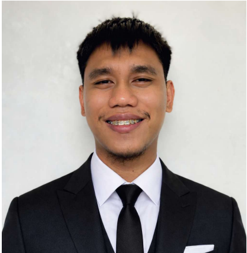
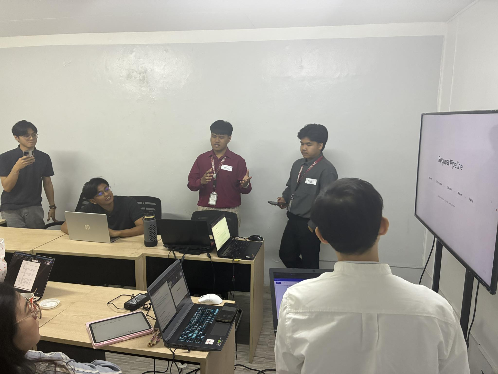

TECHFACTORS INC. — 2026
LU
INTERNSHIP
6
WKS
WKS
mBot2
Arduino
React
TypeScript
Firebase
Pico W
Robotics
UX

JD



The internship culminated in the final presentation of our web application, officially titled TALA.sys. We demonstrated the full end-to-end workflow: from manual account creation in Firebase to role-specific auditing dashboards built with React and TypeScript. Department heads reviewed the progress, tested the access logic, and expressed great satisfaction with the system's stability and Glassmorphism design language.
I learned that the last 10% of a project — polishing, bug fixes, and UI tweaks — is what makes it feel production-ready. Seeing the department heads' positive reaction taught me that UX is just as important as backend logic. The core system was successfully validated for deployment, with only minor final adjustments noted.